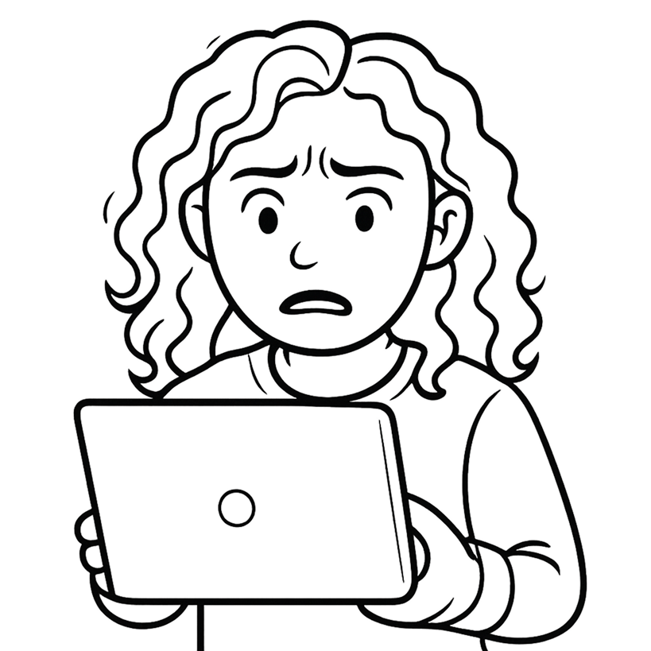

Problem Statement
The legacy UI stack constrained consistency, slowed feature development, and made it difficult to evolve interaction patterns alongside Guidewire's modern products. Each enhancement required custom solutions, increasing maintenance cost and fragmenting the user experience across the platform.
PERSONA
"It's frustrating! My leaders want our performance numbers compared to last year and competitors, and I can't find anything quickly. I'm going through old PowerPoints, digging up industry reports, searching through archived stuff... This is taking way longer than it should."

Sarah, Business Analyst
How might we...
Transform Guidewire Compare using Jutro such that the most frustrating part of a Sarah's day into a moment of clarity and confidence?